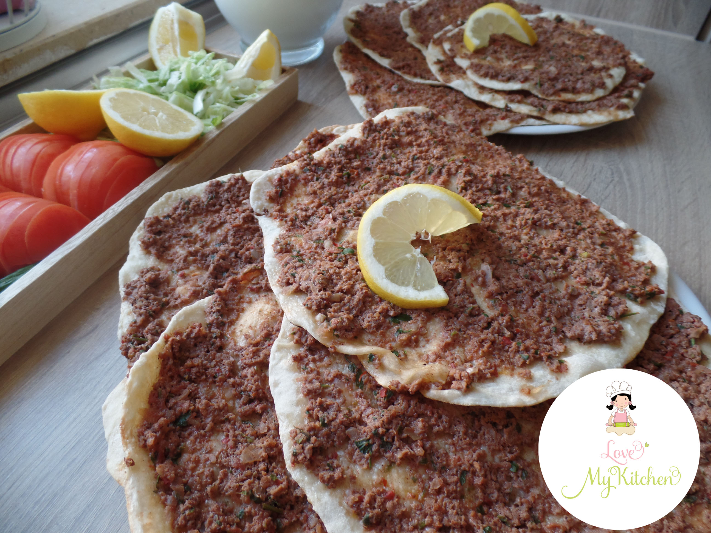

Lahmbeajin: Fleisch mit Teig
Lahmacun ist ein dünner Teigfladen mit einer würzigen
Fleisch-Gemüse-Mischung. Dazu passen Salat und Zitrone.

Zutaten für 4 Stück
| Menge | Einheit | Zutat |
|---|
| 300 | g | Mehl |
| 180 | ml | Wasser |
| 1 | TL | Salz |
| 2 | EL | Olivenöl |
| 250 | g | Rinderhackfleisch |
| 1 | Stk | Zwiebel |
| 1 | Stk | Tomate |
| 1 | Stk | Paprika |
| 1 | EL | Tomatenmark |
| 1 | Prise | Pfeffer |
Benötigte Küchenutensilien
- Schüssel
- Messer
- Nudelholz
- Backblech
- Backpapier
Zeit
Etwa 60 Minuten Gesamtzeit: 25 Minuten Vorbereitung,
20 Minuten Ruhezeit und 15 Minuten Backzeit.
Zubereitung
-
Mehl, Wasser, Salz und Olivenöl zu einem Teig kneten.
Den Teig abdecken und 20 Minuten ruhen lassen.
-
Zwiebel, Tomate und Paprika klein schneiden.
Mit dem Hackfleisch, Tomatenmark und Pfeffer vermischen.
-
Den Teig in vier Stücke teilen und jedes Stück dünn ausrollen.
Die Fleischmischung dünn darauf verteilen.
-
Die Teigfladen auf ein Backblech mit Backpapier legen
und bei 220 °C etwa 12 bis 15 Minuten backen.
-
Lahmacun nach Wunsch mit Salat und Zitrone servieren.
Ähnliche Rezepte
{kind=link}
{kind=link}